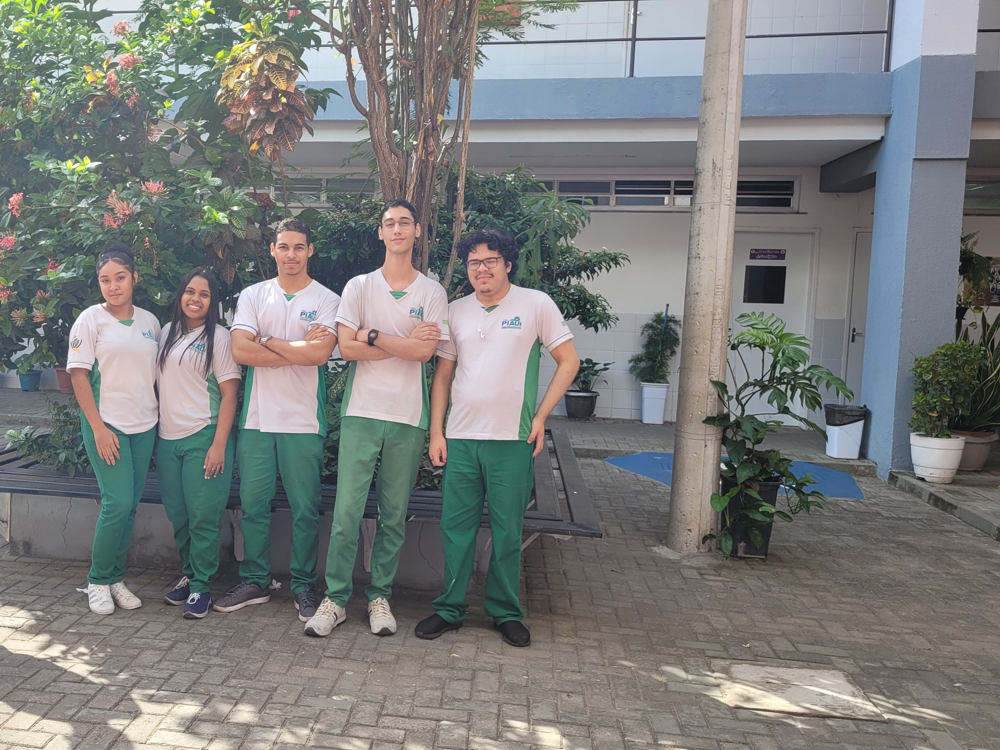
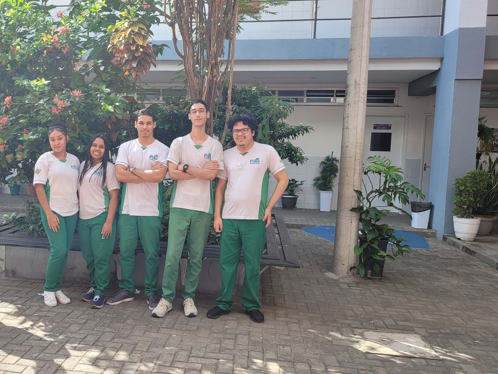

Ceep José Pacífico de Moura neto
 

Inaugurada no dia 13 de fevereiro de 2017, o Centro Estadual de Educação Profissional (CEEP) José Pacífico de Moura Neto com uma hitoria de 6 anos, já tendo formado milhares de profissionais para o mercado de trabalho piauiense. A escola está localizada na zona sudeste de Teresina, no bairro do Novo Horizonte e conta atualmente com mais de 1.000 estudantes. A escolha desse nome foi uma homenagem ao professor José Pacífico de Moura,em reconhecimento ao seu trabalho como professor, técnico e gestor na educação pública do Piauí.
Um trabalho da dicplina de Projeto de Aprendizagem Interdiciplinar relaizado pelos alunos do 2° ano B de informática sobre a escola,
mostra que grande parte dos alunos classifica a qualidade de ensino como bom, e com uma estrutura exepicional.
Nessas opiniões também á menções sobre o que atraíam estes estudantes para a escola, como já dito, a estrutura,
o ensino,a atratividade dos cursos proficionalizantes e o apio de amigos que também estudaram o mesmo curso. Atualmente a escola tem uma variaçao de cursos divididos por eixos:
Eixo de tecnológia, com os cursos:
- Informática
- Desenvolvimento de Sistemas
Eixo saúde, com os cursos:
- Enfermagem
- Analíses Clínicas
- Fámacia
Eixo de produção, com os cursos:
- Edificações
- Manutenção Altomotiva
- Metrologia
- Produção de Moda
- Segurança do Trabalho
- Manutençao de Energia Renováveis
Através de uma rápida entrevista foi constatado alguns números, onde 41% dos alunos afirmarem que a escola tem um bom ensino,
8,3% deles como muito bom e mesmo para regular. Em relaçao a estrutura da escola 25% classificaram como bom, 33% como muito bom e 8,3% como regular.
Logo depois foi feito mais algumas perguntas para outra pequena parcela de alunos, 33% relataram que umas das coisa que mais lhe chamaram a atenção foi
a estrutura e apenas 8,3% a qualidade do ensino e 25% em virtude do curso profissionalizante